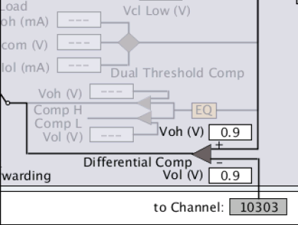
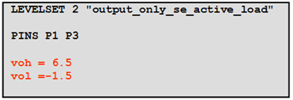
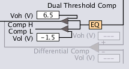
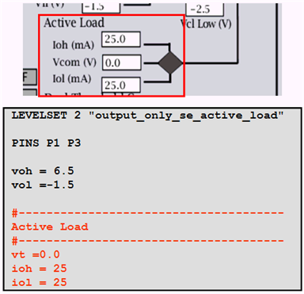
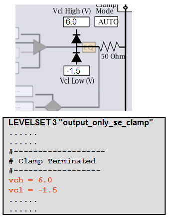
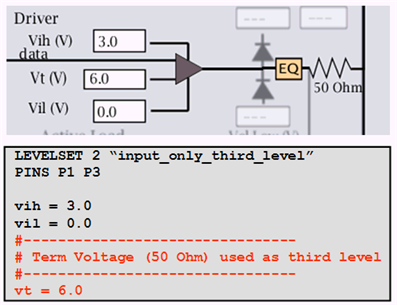
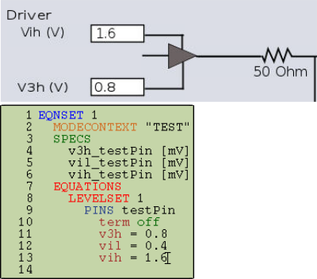

Pin Scale 5000 level setup
The level setup of the Pin Scale 5000 card is similar to that of the Pin Scale 1600 card.
- Three-level driver (vil, vih, and driver termination voltage vt) in standard (std) mode.
- Four-level driver in FAST mode only (vih and
vil, v3h and
v3l = v3h - (vih - vil)). - Active load pin line discharge
- Differential threshold
In the "Hardware View" (see Hardware Perspective), the pin channel of the PS5000 card is displayed as shown below.

Differential comparator single voltage threshold (vth)
LEVELSET 1 "io_diff_ctrtap" PINS P1@diff #--------------------------- #Enable termination voltage #--------------------------- term center_tap
You specify the single differential threshold (vth) for your differential measurement in the level set as shown below:
LEVELSET 1 "io_diff_ctrtap" PINS P1@diff #--------------------------- #Enable termination voltage #--------------------------- term center_tap vih = 1.8 vil = 0 #--------------------------- # Differential comparator single voltage threshold #--------------------------- vth = 0.9

Differential comparator dual voltage thresholds (vol and voh)
You can enable the comparator to operate in differential mode using the keyword term center_tap in your level set:
LEVELSET 1 "io_diff_ctrtap" PINS P1@diff #--------------------------- #Enable termination voltage #--------------------------- term center_tap
Single-ended comparator dual voltage thresholds (vol and voh)
You specify the dual voltage thresholds (vol and voh) for your differential measurement in the level set as shown below:
LEVELSET 1 "io_diff_ctrtap" PINS P1@diff #--------------------------- #Enable termination voltage #--------------------------- term center_tap vih = 1.8 vil = 0 #--------------------------- # Differential comparator dual voltage thresholds #--------------------------- vt = 1.8 vol = -1 voh=1
For single ended setups, the dual threshold comparator is set up by defining voh and vol in the level set as follows.

The corresponding hardware view is shown below.

Active load (programmable load)
The following figure shows the level set and hardware view for an active load.

Clamp
The clamping is set up by defining clamp on in the level setup window and giving values for Vcl high (vch) and Vcl low (vcl).
The following figure shows an example of clamps in the hardware view and a section of the level setup file.

Driver levels in standard mode
The following applies to the normal driver, which is set up as for the PS1600 card.
In addition to the high (Vih) and low (Vil) levels, the PS5000 card allows you to set up a third driver level (Vt). The following figure shows an example.

Driver levels in FAST mode
In addition to the standard three-level driver, the PS5000 card in FAST mode allows you to set
up a fourth level (v3h and v3l), where
v3l is calculated as v3l = v3h - (vih -
vil).

Functional changes
- Introduced in SmarTest 7.10.2